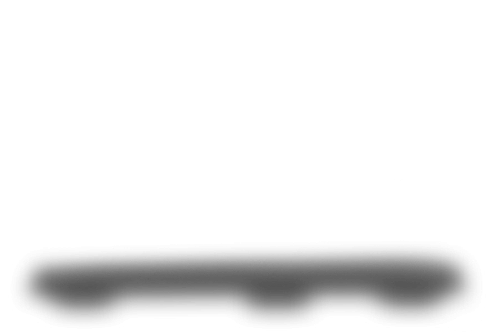
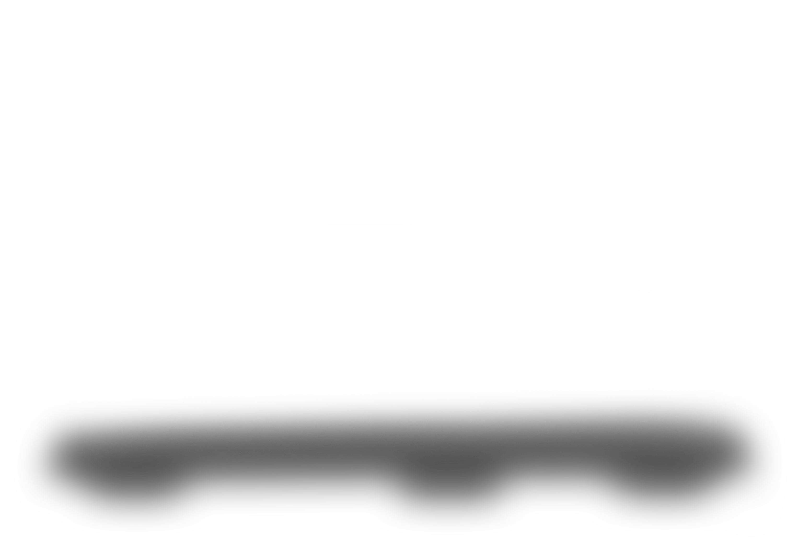
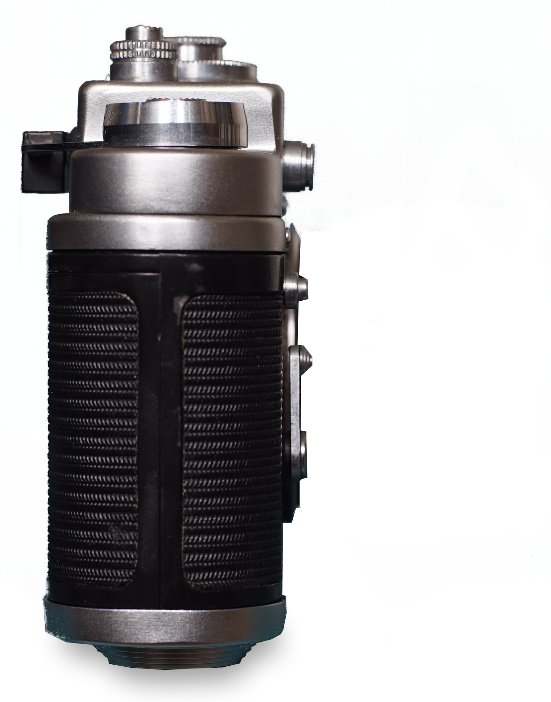
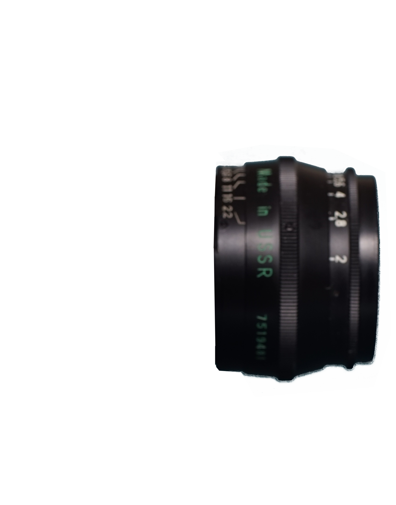
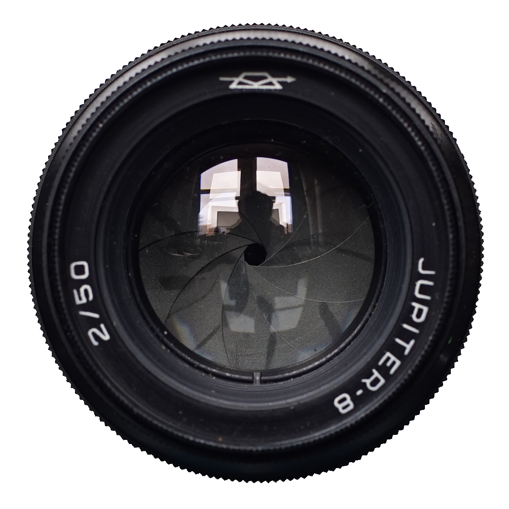

ZORKI-4K
Beautifully Utilitarian.
 



Comes equiped with a 50mm f/2 as standard
All Zorki-4Ks come with either a Jupiter-8 50mm f/2 or an Industar-50 50mm f/3.5, both manufactured by KMZ in Krasnogorsk.
M39 mount
clickless aperture
f/2 - f/22
